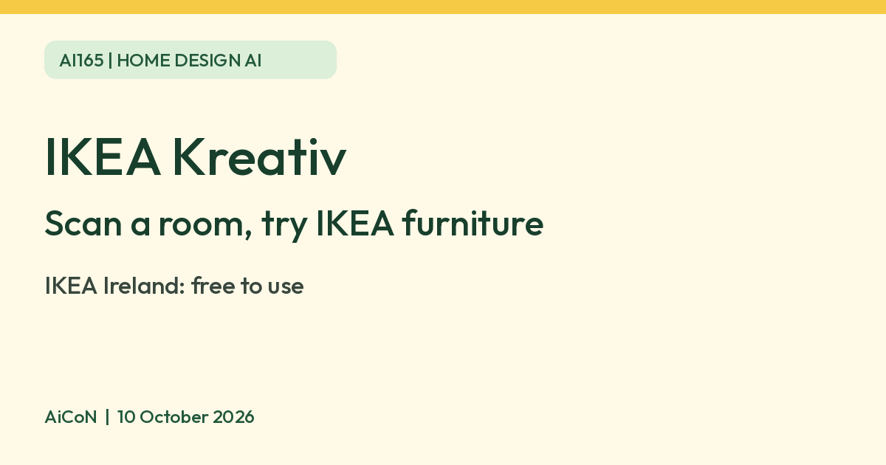

IKEA Kreativ: scan your room and try IKEA furniture with AI, and is it free
IKEA Kreativ scans your room, erases old furniture and places IKEA items in it at scale. IKEA Ireland says it is free to use. IKEA India has its own pages.

What it is
IKEA Kreativ is an AI-powered room design tool. IKEA India describes it as a way to scan, erase, design and bring your home to life. You scan your room with the IKEA mobile app, remove existing furniture with an eraser tool, then add IKEA furniture, accessories and wall art. IKEA says items are sized to scale. Treat this as a visual planning aid, not a substitute for checking real product dimensions, access routes and clearances before buying; IKEA's broader India planner page also asks you to keep room measurements handy. If you do not want to scan, there are 50+ virtual showrooms to decorate.
Is it free
IKEA's Ireland help page says: "No, it is free to use." The IKEA India pages we read describe the tool but do not state a cost either way. So the free answer comes from IKEA's Ireland page, not an India page. Check the app before you rely on it. Buying the furniture is a separate cost, and prices in rupees come from the IKEA India catalogue.
Is it available in India
Yes. IKEA India has its own Kreativ pages and help articles, including how to scan a room. IKEA says to get the IKEA mobile app from the App Store or Google Play. Device support is not universal. IKEA Kreativ's support article, updated May 2025, lists iOS 14+ or Android 9+ plus an ARCore-supported device and Google Play Services for AR. It also lists hardware exclusions and says Full Room Scan needs a LiDAR-capable iOS device. This is not a current app-store compatibility guarantee: check the latest app requirement and your exact model. We did not test an Indian phone or account.
How to try it
- Install the IKEA app and open Settings from the profile icon.
- Tap IKEA Kreativ, then the camera icon to scan a room.
- Choose the room type and follow the capture prompts; the app selects a scan method for your device. IKEA recommends dedicated planners for kitchens and bathrooms.
- Erase old furniture and add IKEA items. Hide All and Show All let you undo hiding items.
- Save and share only after checking what the design reveals. India help says remixing a room for someone else to edit is web-only; mobile supports sharing.
Limits to know
- You can only scan a room in the mobile app. After that you can design on phone or on the website.
- It does not yet support textiles such as curtains, pillows and blankets, or ceiling items such as pendant lamps.
- IKEA recommends its Kitchen Planner for kitchens, because Kreativ is limited there.
- It only shows IKEA products. It is a way to try IKEA furniture, not neutral advice.
- We did not test it ourselves.
Room photos and privacy
A room scan can reveal your home layout and belongings. Before capturing or sharing, keep people, private documents and personal photos out of view. Use a virtual showroom if you do not want to scan your own home. Read the India privacy notice and any scan/account prompts; we did not verify India-specific scan retention, deletion or model-training terms, so do not assume the tool works offline or that scans are deleted immediately.
Frequently asked questions
Is IKEA Kreativ free?
IKEA's Ireland help page says it is free to use. The India pages do not state a cost, so confirm in the app.
Sources: What is IKEA Kreativ (India), How to scan a room (India), IKEA India planner page, Cost (Ireland), Device support, India privacy notice. Checked 10 October 2026.